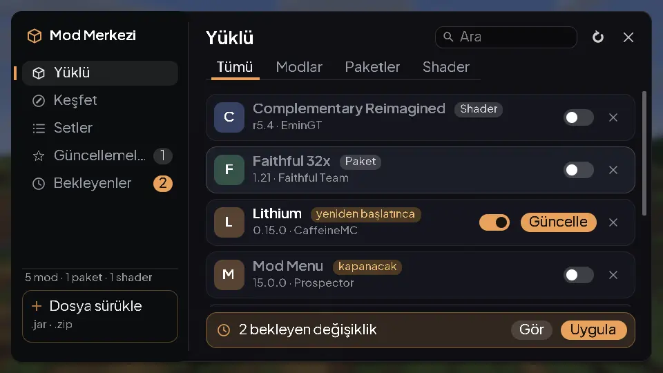
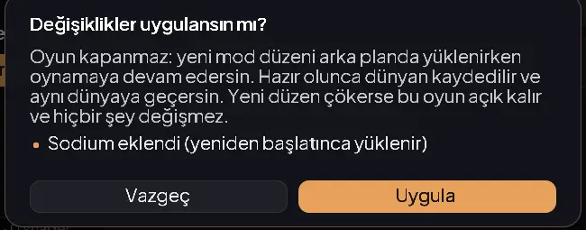
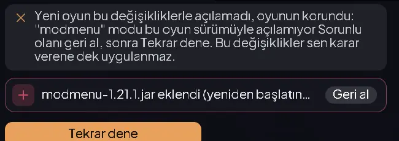
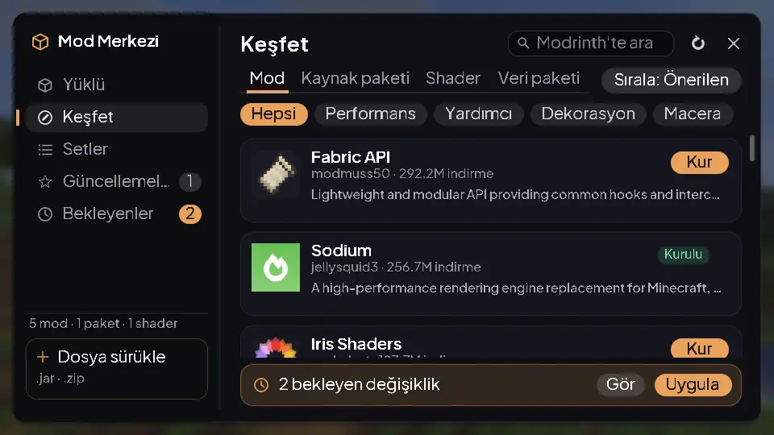

Minecraft'ı kendi rotanda oyna.
West Client; modlarını, paketlerini, dünyalarını ve arkadaşlarını tek, hızlı ve güzel bir yerde toplayan ücretsiz Minecraft launcher'ı. Çöken bir paketin suçlusunu bile senin yerine bulur.

Modları oyundan çıkmadan değiştir.
Oyundayken H'ye bas: kurulu modları, kaynak paketlerini ve shader'ları aç-kapat, sil, güncelle; Modrinth'ten yenisini kur. Kaynak paketi, shader ve veri paketi anında uygulanır.
- Mod değişince oyun kapanmaz: yeni düzen arka planda açılır, hazır olunca aynı dünyaya ya da sunucuya geçersin
- Yeni düzen çökerse oyunun açık kalır; değişiklik "açılamadı" diye işaretlenir ve suçlu mod adıyla gösterilir
- Bir modu kapatınca ona bağlı olanları, açınca gerekenleri sorar
- Her değişiklik geri alınabilir; .jar ve .zip dosyalarını pencereye sürükleyip bırakabilirsin


Bozuk bir mod oyununu bozmaz.
Yeni mod düzeni açılamazsa West Client hangi modun sorun çıkardığını söyler, o modu kendiliğinden kapatır ve oyununu olduğu gibi bırakır. Oyunu kapatıp açsan da çökmez; karar senindir: geri al ya da tekrar dene.

Aradığın mod bir tık uzakta.
Modrinth'teki içeriğin tamamı West Client'ın içinde; launcher'da da, oyunun içinde de. Bir moda tıkla; ne işe yaradığını, ekran görüntülerini ve her sürümde neyin değiştiğini oku.
- Minecraft sürümü, yükleyici ve kategoriye göre süzme
- "Yalnız istemci", "Yalnız sunucu", "İkisinde de" ayrımı
- Galeri, tam açıklama ve sürüm sürüm değişiklik notları
- "Ekle ▾" ile istediğin instance'a kur; uyumsuz olanlar nedeniyle birlikte gösterilir
- Gereken bağımlılıklar kendiliğinden kurulur


Her paket, kendi dünyası.
Modlarını, resource pack'lerini ve shader'larını tek tabloda yönet. Aç-kapat, güncelle, sil; hepsi bir dokunuş.
- Mod simgesi, yazarı ve sürümü otomatik tanınır
- Dünyaları tek tıkla zip olarak yedekle
- Canlı konsol, eski loglar ve çökme raporları
- Paketini .mrpack olarak arkadaşınla paylaş
- Kendi banner'ın ve simgen, ya da hazır piksel manzaralar

“Hangi mod oyunu çökertiyor?”
Ashi bulur.
200 modlu bir paketi elle tek tek denemek saatler sürer. Ashi, modları akıllıca ikiye bölerek yalnızca birkaç turda suçluyu yakalar; sen kahveni içerken.
- Her çökmenin “parmak izini” alır; başka bir hatayı asıl hatayla karıştırmaz
- Fabric API, Kotlin, Cloth Config gibi kütüphaneleri asla tek başına kapatmaz
- Gizli bağımlılıkları hatadan çıkarıp otomatik açık tutar
- Bitince bütün modlarını eski haline getirir; hiçbir şey silinmez

Bir launcher'dan beklediklerin.
- İzole instance'lar
- Vanilla, Fabric, Quilt, Forge ve NeoForge; her paket kendi klasöründe. Klonla, şablon yap, kapak ve simge koy.
- Her yerden aktar
- Modrinth App, CurseForge, Prism, MultiMC ve resmi launcher'daki paketleri orijinaline dokunmadan taşır.
- Java ve bellek kendiliğinden
- Doğru Java'yı indirir; belleği ve JVM ayarlarını donanımına ve mod sayına göre seçer.
- Mod setleri ve paylaşım
- "PvP", "Hafif", "Shader" gibi düzenleri kaydet, oyundayken tek tıkla geç. Bir seti kodla arkadaşına gönder; eksik modlar onun sürümüne uygun kurulur.
- Geri dönüş noktaları
- Her değişiklikten önce mod düzenin kaydedilir. Bir şey ters giderse tek tıkla önceki hâline dön; hiçbir dosya silinmez.
- Hızlı yeniden başlatma
- Mod değişikliğinden sonra oyun, doğrulama ve indirmeyi tekrarlamadan saniyeler içinde yeniden açılır.
- Skin ve galeri
- Skin düzenleyici ve 3D önizleme; ekran görüntülerini kırp, düzenle, paylaş.
- Güvenli giriş
- Microsoft şifren yalnızca Microsoft'un sayfasına girilir. İstersen launcher'ı şifreyle kilitle.
- Discord ve haberler
- Ne oynadığın Discord profilinde görünür; Minecraft ve mod güncellemeleri tek sayfada.
- Kendini günceller
- Yeni sürümü haber verir, indirir, SHA-256 ile doğrular ve tek tıkla kurar.
Hazırsan, yola çıkalım.
Ücretsiz. Kurulumu bir dakika sürer; ilk açılışta Ashi seni karşılar ve kalan her şeyi birlikte ayarlarsınız.
Aklına takılanlar
West Client ücretsiz mi?
Evet, tamamen. Reklam, ücretli sürüm ya da abonelik yok. Kaynak kodu da GitHub'da açık.
Minecraft'ı satın almam gerekiyor mu?
Microsoft hesabınla giriş yaparak satın aldığın Minecraft: Java Edition'ı oynarsın. West Client, Minecraft'ı ücretsiz yapan bir program değildir; resmi oyun dosyalarını Mojang'ın sunucularından indirir.
Microsoft hesabımla giriş yapmak güvenli mi?
Şifren yalnızca Microsoft'un kendi giriş penceresine girilir; West Client şifreni görmez ve saklamaz. Bilgisayarında yalnızca Microsoft'un verdiği oturum anahtarı tutulur.
Antivirüsüm uyarı veriyor, virüs mü?
Hayır. West Client henüz dijital imzalı olmadığı için Windows SmartScreen ve bazı antivirüsler “tanınmayan uygulama” uyarısı gösterebilir. Ayrıca launcher'lar internetten oyun dosyaları indirip başka programlar çalıştırdığı için bazı antivirüsler tahmine dayalı alarm verebilir.
Kodun tamamı GitHub'da açıktır ve her sürüm GitHub'ın sunucularında otomatik derlenir. Dosyayı yalnızca bu siteden ya da GitHub Releases'tan indir.
Diğer launcher'lardaki paketlerimi taşıyabilir miyim?
Evet. İlk açılışta West Client; Modrinth App, CurseForge, Prism Launcher, MultiMC ve resmi launcher'daki paketlerini bulur ve orijinallerine dokunmadan kopyalar.
Hangi Minecraft sürümlerini destekliyor?
Mojang'ın yayınladığı bütün Java Edition sürümlerini; Fabric, NeoForge, Forge ve Quilt yükleyicileriyle. Oyun içi West Paneli (FullBright, FPS göstergesi) şimdilik 1.21.1 Fabric ve NeoForge'da çalışıyor.
West hesabı ne işe yarıyor?
Profilini (ad, fotoğraf, biyografi) ve ayarlarını her bilgisayarda aynı tutmak için. Oyunu oynamak için gerekmez; istersen hiç açmadan da West Client'ı kullanabilirsin.
Ashi'nin yapay zekâsı ücretli mi?
Hayır. Ashi bilgisayarında çalışan ücretsiz bir model (Ollama) kullanır; hesap, anahtar ya da şifre istemez. "Ashi'yi akıllandır" düğmesine bastığında Ollama ve model birlikte, tek seferde kurulur. Kurmak istemezsen Ashi basit modda, mesajındaki anahtar kelimelerle arar.
Bir hata buldum ya da önerim var.
Harika! GitHub'daki Issues sayfasından bildirebilirsin.
Rotanı belirle. Oynamaya başla.
Bir dakikada kur, Ashi gerisini halleder.